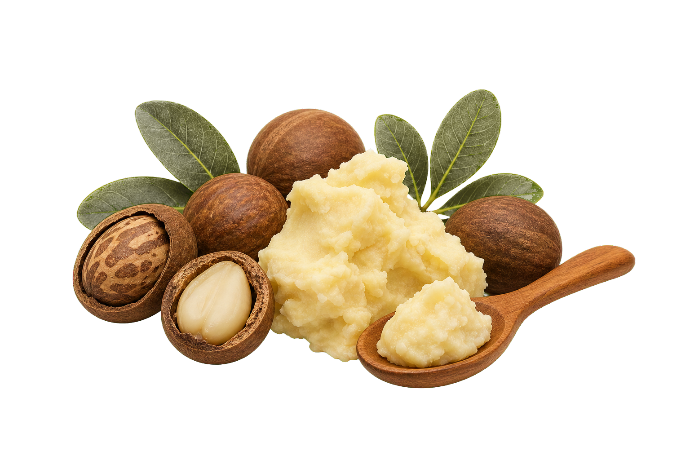

Dry skin
Press onto slightly damp skin to soften rough texture and help seal in lasting moisture.
Pure East African Nilotica Shea

Cold-pressed from Northern Uganda, Zuri Nilotica is a silky single-ingredient balm for face, lips, body, and hair ends.
Sensory profile
Zuri Nilotica has a soft, silky balm texture that needs no heating or whipping. A small amount melts on contact and spreads easily over dry-feeling skin.
Unrefined, fragrance-free, and cold-pressed, every jar keeps its natural light nutty aroma and creamy softness.
Buy nowPress onto slightly damp skin to soften rough texture and help seal in lasting moisture.
Warm a trace amount and smooth it over dry hair ends, braids, or protective styles.
Massage into heels, elbows, knees, and cuticles whenever they need nourishing softness.
How to use
Start with a small amount. It melts on contact, ready to press into the face, lips, body, or smooth over hair ends.
For lasting hydration, apply to slightly damp skin. Store cool and closed; natural texture changes with temperature are normal.
Buy on AmazonFull ingredients
No synthetic fillers. No added fragrance. No petroleum, mineral oil, parabens, or artificial color.
Cold-pressed Nilotica may soften in warmth or firm in cooler temperatures. This natural shift does not change its quality.

Why the source matters
Every jar begins with wild Nilotica shea trees and fallen nuts gathered through women-led communities in Northern Uganda, then carefully dried and cold-pressed.
Read sourcing storyGrown wild along the East African Nile belt and sourced in Northern Uganda.
Cooperative partnerships and cooperative premiums help support communities and conserve the trees behind future harvests.
One ingredient: 100% cold-pressed Nilotica shea butter, with zero synthetic fillers or fragrance.
Welcome to Zuri Nilotica
If you already have your jar, start with a small amount and warm it between clean palms. It melts in quickly and is made for dry skin, lips, body, and hair ends.
If you are still deciding, this is rare Nilotica shea from Northern Uganda. One ingredient, a silky feel, and nothing unnecessary added.